В WarTunder вертолёты становятся доступны для исследования и покупки только с открытием хотя бы одной машины 5 ранга (самолёта или танка) соответствующей нации. Ветку вертолётов в WarTunder представляют такие машины как: Ми-4АВ,Ми-8ТВ,Ми-8АМТШ,Ми-8АМТШ-ВН,Ми-24А,Ми-24Д,Ми-24В,Ми-24П,Ми-35М,Ми-28Н,Ми-28НМ,Ка-29,Ка-50,Ка-52.
Ми-4АВ
Ми-4 — советский многоцелевой вертолёт. Был разработан в 1951–1952 годах и производился вплоть до 1979 года, всего было выпущено более 3000 вертолётов Ми-4 разных модификаций. Вертолёт использовался как в гражданской, так и в военной авиации, и заслужил хорошую репутацию благодаря своей надёжности и высокой грузоподъёмности, за счёт чего продолжал использоваться по всему миру до 2000-х годов. Однако, несмотря на впечатляющий срок службы, Ми-4 практически не использовался в реальных военных действиях. За время серийного производства вертолёт также неоднократно модернизировался. Так, к началу 1960-х годов основной производственной версией вертолёта стала поздняя модификация с исправлением множества недочётов конструкции, получившая обозначение Ми-4А. Эксперименты по вооружению Ми-4 проводились ещё в 1960-х годах, однако первая серийная ударная модификация вертолёта, получившая обозначение Ми-4АВ (вооружённый) , появилась лишь в 1966 году. В её рамках на вертолёт для тестирования устанавливался комплекс вооружения от ещё находящегося в разработке Ми-24А: машина получила возможность нести до четырёх ПТУР 9М17М «Фаланга», шесть блоков с НУРС С-5 или авиабомбы, а в подфюзеляжной гондоле вертолёта устанавливался 12,7-мм пулемёт А-12,7. В СССР в вариант Ми-4АВ было переоборудовано около 200 вертолетов. В игру Ми-4АВ был добавлен в обновлении 1.81 «Полет валькирий». Это непростой для освоения вертолёт, так как у него отсутствует защита пилотов и самой конструкции , основное вооружение представлено 12,7-мм пулемётом, который не способен нанести критический урон вражеским вертолётам, а большая масса в 8 тонн ухудшает и без того скромные лётные характеристики. Из явных положительных качеств можно выделить только наличие управляемого вооружения в виде ПТУР «Фаланга», которыми можно поразить вражескую бронетехнику на дистанции до 4 км.
Ми-8ТВ
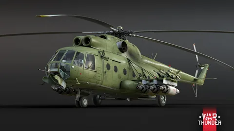Ми-8 (по кодификации НАТО: Hip — «Бедро») — советский многоцелевой вертолёт. Работы по его созданию были начаты в ОКБ Миля в мае 1960 года, а первый опытный однодвигательный образец был поднят в воздух уже 24 июня 1961 года. В ходе испытаний было принято решение сделать силовую установку двухдвигательной и спроектировать специально для этого вертолёта новый пятилопастной несущий винт. 17 сентября 1962 года новый вариант вертолёта совершил свой первый полёт, а в 1965 году, после окончания лётных испытаний, на Казанском вертолётном заводе было начато серийное производство машины в двух вариантах: пассажирском Ми-8П и десантно-транспортном Ми-8Т. За всё время производства, продолжающегося по сей день, было построено более 7300 вертолётов Ми-8 различных модификаций. Одной из них стала разработанная в 1968 году версия Ми-8ТВ (сокр. «транспортный вооружённый»). Машина получила крупнокалиберный пулемёт в частично подвижной носовой установке, а на пилонах предполагалось размещение широкой номенклатуры подвесного вооружения, включая комплекс противотанковых управляемых ракет «Фаланга». Боевая эффективность такой комплектации вертолёта приближала его к ранним версиям Ми-24, при этом Ми-8ТВ сохранял возможность брать на борт до 23 человек десанта, которые также могли вести огонь из личного оружия с помощью шкворневых установок, установленных в бортовых иллюминаторах. Вертолёты Ми-8ТВ производились ограниченной серией в Казани, а также поставлялись в пограничную и морскую авиацию. В игру Ми-8ТВ был добавлен вместе с выходом обновления 2.29 «Сыны Аттилы». Ми-8 на своих шести пилонах может установить огромное количество блоков НАР С-5К, классические 250/500-кг бомбы, напалм и до четырёх ПТУР 9М17М «Фаланга». Но не обошлось и без недостатков, в частности огромный размер и большая масса не позволяют вертолёту активно маневрировать между деревьями или складками местности, поэтому уклониться от вражеской ракеты будет довольно трудной задачей.
Ми-8АМТШ
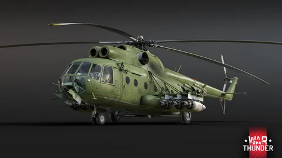Ми-8АМТШ (аббр. «армейский многоцелевой транспортно-штурмовой») — современная модификация советского транспортного вертолёта Ми-8, была разработана на базе многоцелевой версии Ми-8АМТ на авиационном заводе в Улан-Удэ в 1996 году. Машина получила возможность нести комплекс управляемого вооружения, аналогичный современным вариантам Ми-24, включая ПТУР «Штурм». Также вертолёт получил усиленную бронезащиту, новую авионику и доработанную конструкцию. Неофициальное прозвище данной машины — «Терминатор», под этим обозначением вертолёт демонстрировался в 1999 году в Великобритании на авиасалоне Фарнборо. На вооружение ВВС России Ми-8АМТШ был принят в 2009 году. В игру Ми-8АМТШ был добавлен в обновлении 2.31 «Боги войны». Ми-8АМТШ от предыдущей версии отличается новым набором вооружения, в частности новыми ПТУР-ами «Штурм» с большей дальностью полёта чем «Фаланги», УРВВ «Игла» для защиты от вражеской авиации, новыми пулемётными контейнерами, а для защиты от ракет с ИК-наведением имеются блоки ЛТЦ. Однако никуда не делись основные недостатки машины, в частности огромный размер и большая масса не позволяют вертолёту активно маневрировать между деревьями или складками местности, поэтому уклоняться от вражеских ракет ему будет затруднительно.
Ми-8АМТШ-ВН
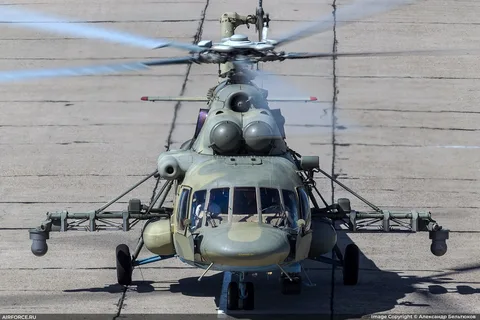Ми-8АМТШ-ВН «Сапсан» — это дальнейший развитие версии Ми-8АМТШ «Терминатор». Главными отличиями нового вертолёта стали новые двигатели российского производства и новый четырёхлопастной рулевой винт, который использовался на вертолётах Ми-28Н и Ми-35. Модернизированная электроника дала возможность использовать противотанковые управляемые ракеты «Атака», было доработано десантное отделение вертолёта.
Ми-24А

Ми-24А (по классификации НАТО: Hind — «Лань») — первая серийная версия советского ударного вертолёта Ми-24 разработки ОКБ М. Л. Миля , также знаменитого прозвищами «Крокодил» или «летающая БМП» (так как одной из характерных особенностей машины является наличие транспортной части). Опытный экземпляр Ми-24 взлетел летом 1969 года, а уже в 1970–71 годах серийные Ми-24А начали поступать в войска. Вооружение на первой модификации состояло из противотанкового комплекса «Фаланга-М» с ручной системой наведения, подвижной установки НУВ-1 с крупнокалиберным пулемётом, а также блоков неуправляемых ракет или бомб. Боевое крещение вертолёт принял в конце 1977 года во время войны за Огаден. Ещё одним конфликтом, в ходе которого использовались машины Ми-24А, стала вьетнамская интервенция в Камбодже. Главным же испытанием для вертолётов Ми-24 стал афганский конфликт, однако конкретно версии Ми-24А выполняли в нём в основном вспомогательные, санитарные и транспортные функции. Всего же за пять лет производства было построено около 250 Ми-24А, после чего их сменили более совершенные модификации. В игру Ми-24А был добавлен в обновлении 1.81 «Полёт Валькирий». В игровых реалиях высокая как для вертолёта скорость и достойная бронезащита делают его в применении чем-то похожим на штурмовик Ил-2: вертолёт может использовать свою высокую скорость для стремительных налётов, «доставляя» противникам залпы НАР-ов или авиационные бомбы. Также он может атаковать команду противника с дистанции в 4 км, используя противотанковые ракеты «Фаланга-М», находясь при этом за пределами досягаемости большинства ЗСУ с пушечным вооружением. Наибольшую же угрозу для Ми-24А представляет авиация, так как вертолёту сильно не хватает противовоздушного вооружения. Ми-24А также довольно уязвим для пушечных ЗСУ, если он окажется в пределах их досягаемости.
Ми-24Д(Является представителем Топовой Ветки Вертолётов СССР)
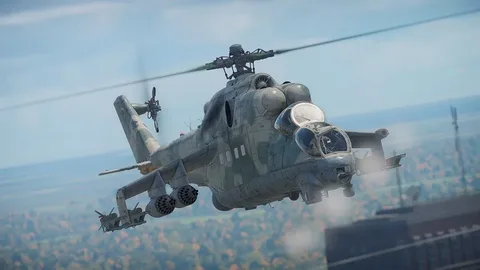Ми-24Д (прозв. «Крокодил» или по классификации НАТО — «Hind-D») — промежуточный вариант модификации советского ударного вертолёта между Ми-24А и Ми-24В, был разработан в конце 1960-х годов. Первые годы эксплуатации вертолётов Ми-24А показали недостатки этих машин, к ним относились неудачная конструкция кабины экипажа и низкая эффективность пулемёта А-12,7. Несмотря на богатое остекление кабины, обзорность в ней была достаточно ограниченной, особенно при посадке. Кроме того, и безопасность экипажа в ней была низкой — из-за того, что кабина была общей и экипаж в ней располагался на одном уровне, взрыв одного снаряда мог травмировать и лётчика, и оператора. Поэтому началась работа над модернизацией вертолёта. Первый полёт прототипа состоялся в первой половине 1970-х годов, а производство началось в 1973 году. После одобрения советских властей, 29 марта 1976 года вертолёт был официально принят на вооружение под обозначением Ми-24Д. Главными доработками были изолированные и расположенные тандемно кабины экипажа, передняя часть шасси лишилась колпаков, пулемёт А-12,7 заменен новым четырёхствольным ЯкБ калибра 12,7 мм, размещённым в управляемой пулемётной установке под рабочим местом оператора. Вскоре после принятия вертолёта на вооружения ВВС СССР, эти машины также стали основными боевыми вертолётами и для стран Варшавского договора. В Чехословакию вертолеты Ми-24Д стали поступать ещё в 1978 году, тогда прибыло около 40 машин. В игру чешский Ми-24Д был добавлен в обновлении 1.81 «Полет валькирий» и расположился в дереве вертолётов СССР. В бою вертолёт можно до предела загрузить блоками неуправляемых ракет С-5К и буквально засеять всё поле боя ракетами, или же взять 250/500-кг бомбы для дерзкой диверсии прямо в гуще событий, а можно с безопасной дистанции уничтожать вражескую бронетехнику с помощью ПТУР «Фаланга». Однако главный недостаток Mi-24 — это его огромная масса в 12 тонн, что сильно сказывается на его лётных характеристиках, но за счёт двух двигателей этот недостаток частично компенсируется хорошей скоростью.
Ми-24В
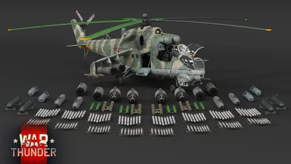Ми-24В (прозв. «Крокодил», по классификации НАТО — «Hind-E») — самая массовая модификация советского ударного вертолёта разработки ОКБ М. Л. Миля. Разрабатываясь параллельно с Ми-24Д, изменения в ней также коснулись кабины пилотов и бортового вооружения: летчик и оператор размещались в изолированных кабинах тандемно, также появилась подвижная пулемётная установка УСПУ-24 с пулемётом ЯкБ-12,7. Однако, ключевой особенностью версии Ми-24В был новый противотанковый ракетный комплекс «Штурм» с ракетами 9М114 и системой наведения «Радуга». Данная версия вертолёта была принята на вооружение СССР 29 марта 1976 года, всего было произведено более 1000 машин данной модификации. В игру Ми-24В был добавлен в обновлении 1.81 «Полет валькирий». Вертолёт способен взять огромное количество вооружения и при этом имеет хорошую защиту от зенитного огня. Помимо бомб и блоков НАР, у него появились новые ПТУР «Штурм-В» с дальностью полёта до 5 км, позволяющие поражать бронетехнику противника не входя в зону действия вражеской ПВО. Для защиты от ракет «воздух-воздух» имеются блоки ЛТЦ и СОЭП. Однако главный недостаток вертолёта — его огромная масса в 12 тонн, что сильно ухудшает его манёвренные характеристики, но, несмотря на такую массу, за счёт пары двигателей «крокодил» имеет отличную скорость.
Ми-24П
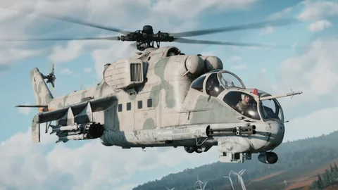Ми-24П (прозв. «Крокодил» или по классификации НАТО — «Hind») — модификация советского многоцелевого вертолета Ми-24, нацеленная на улучшение пушечного вооружения, так как несмотря на преимущества пулемёта ЯкБ-12,7, его было недостаточно для борьбы с бронетехникой. В 1975 году начались испытания модификации Ми-24 с установленной двухствольной 30-мм пушкой ГШ-30-2К, которая создавалась практически с нуля и делалась специально под вертолёт Ми-24П, а после использовалась на штурмовиках Су-25. Многочисленные доработки, нацеленные на устранения обнаруженных проблем, затянули испытание вертолёта более чем на пять лет. Лишь в апреле 1981 года Ми-24П запустили в серийное производство, которое продолжалось до 1991 года. Всего за 10 лет выпущено 620 вертолетов Ми-24П. Как показало реальное применение Ми-24П, в ряде случаев огневая мощь ГШ-30-2К оказалась чрезмерной, для выполнения некоторых операций вполне достаточной была бы пушка калибра 23 мм. На сегодняшний день Ми-24П состоит на вооружении ВВС более чем 20 стран. В игре Ми-24П появился в обновлении 1.81 «Полет валькирий» в ветке исследования вертолётов СССР. В игровых реалиях «Крокодил» проявляет себя как настоящий многоцелевой вертолёт с огромным арсеналом подвесного вооружения. Основной тактикой боя на Ми-24П является высокоточная стрельба с противотанкового ракетного комплекса «Штурм», что позволяет поражать танки противника на огромных дистанциях не входя в зону действия вражеских зениток. Для защиты от авиации на вертолёт можно подвесить всеракурсные УРВВ Р-60М, а также использовать 30-мм пушку ГШ-30-2К. Помимо мощного вооружения, высокая максимальная скорость вертолёта также увеличивает шансы на успешную штурмовку.
Ми-35М
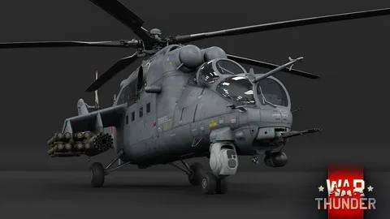Ми-35М (Ми-24ВМ) — российский многоцелевой ударный вертолёт, является глубокой модернизацией легендарных Ми-24. По результатам боевых действий в Афганистане и других горячих точках был выявлен ряд недостатков строевых «двадцатьчетвёрок». Было решено установить на них новые, более мощные двигатели, несущий металлический винт заменить на композитный, а рулевой трёхлопастный винт заменить на Х-образный композитный. Также вертолёт получил неубираемое шасси, а крыло с шестью точками подвеса вооружения заменили на более короткое, четырёхточечное. Значительно улучшились прицельно-обзорные системы, антенны связи и антенны предупреждения об облучении РЛС. Разумеется, обновилось и вооружение: вместо четырёхствольного пулемёта в носовой поворотной установке появилась двуствольная 23-мм пушка ГШ-23Л. Серийный выпуск данной модификации под обозначением Ми-24ВМ или Ми-35М начался в 2005 году. В настоящее время на вооружении российской армии состоит более 60 Ми-35М, также эти машины экспортируются в другие страны. Ми-35М принимали участие в боевых действиях в Сирии и Украине. В игру Ми-35М был добавлен в обновлении 1.81 «Полет валькирий». Это самый совершенный представитель серии Ми-24: более быстрый, более высотный, с хорошим выбором лент для пушки и огромным выбором комбинаций вертолётного подвесного вооружения: два вида ПТУР — «Штурм-В» и «Атака-В», неуправляемые ракеты С-8, более мощные ракеты С-13ОФ, УРВВ 3М39 «Игла», а также спаренные 23-мм пушки в неподвижных контейнерах. Однако типичный для серии крупный силуэт и большой вес всё ещё дают о себе знать.
Ми-28Н
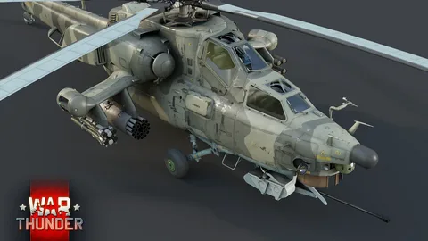Ми-28 — советский ударный вертолёт разработки ОКБ «Миля». Работы над ним, как над перспективным ударным вертолётом, стартовали ещё в начале 1970-х годов, и шли практически параллельно с разработкой его будущего конкурента — Ка-50 от ОКБ «Камов». Обе машины поначалу разрабатывались довольно медленно и к концу 70-х были готовы лишь их предварительные проекты. Серьёзно ускорило их разработку два события — начало Афганской войны и появление в американской армии AH-64 Apache. И уже в 1982 году прототипы обеих машин совершили свой первый полёт. Однако по итогам испытаний в 1984 году наиболее перспективным был выбран вертолёт Камова. Тем не менее, проект Ми-28 не закрыли, хоть и отдали ему меньший приоритет. Конструкторы же учли все замечания комиссии и в 1987 году представили модифицированный прототип машины под обозначением Ми-28А, с более мощным двигателем, новым несущим винтом и другими изменениями. Но и эта версия вертолёта не заинтересовала ни отечественных, ни иностранных заказчиков, в частности потому что была не всепогодной. Исправить этот недостаток конструкторы смогли уже после развала СССР, в 1995 году представив модификацию Ми-28Н «Ночной охотник», получившую новую авионику и оптику с тепловизионным каналом. И она уже нашла своего покупателя: в 2009 году вертолёт Ми-28Н поступил на вооружение российской армии, а позднее продавался на экспорт в Ирак, Алжир и Уганду. Всего же было произведено более 120 вертолётов Ми-28Н, которые продолжают находиться в производстве. В игре Ми-28H появился в обновлении 1.93 «Чёрная акула». Данный вертолёт полностью соответствует статусу «ударный» – таким его делают достойная защита кабины, состоящая из керамики и алюминия. Для противодействия наземной технике имеются блоки НАР-ов и ПТУР «Атака», с авиацией помогут бороться УРВВ «Игла» и 30-мм пушка с подкалиберной лентой, а от вражеских ракет защитят блоки тепловых ловушек. Однако, как и все вертолёты семейства «Миля», Ми-28 тяжёлый, и поэтому манёвры выполняет неохотно.
Ми-28НМ
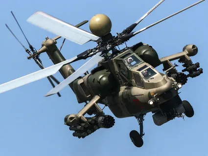Ми-28НМ (аббр. НМ — «Ночной Модернизированный») — модификация российского ударного вертолёта Ми-28Н. Её разработка была начата в 2008 году специалистами компании «Ростверпол» с целью модернизации вертолёта для эффективного использования в любых климатических условиях и улучшения его надёжности. В ходе модернизации вертолёт получил обновлённые навигационный и разведывательный комплексы, новую оптику и новую систему управления, которая позволяет осуществлять «слепую» посадку, а также РЛС Н025. С 2020 года началось серийное производство данной модификации. В игру Ми-28НМ был добавлен в обновлении 2.11 «Дрожь земли». Среди основных отличий от своего старшего брата — Ми-28Н — новый вариант вертолёта имеет универсальные ПТУР 9К127 «Вихрь», как на Ка-50/Ка-52, ПТУР 9М123 «Хризантема», а также надвтулочную РЛС, которая способна обнаруживать наземные и воздушные цели. В остальном он также хорошо проявляет себя в роли ударной машины, однако из-за большой массы манёвры выполняет неохотно.
Ка-29
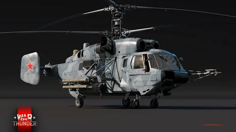Ка-29 (изделие «502», по классификации НАТО — Helix-B) — советский транспортно-боевой вертолёт палубного базирования, разработанный в середине 1970-х годов в ОКБ им. Камова. В 1973 году перед инженерами ОКБ имени Камова встала задача разработки ударной машины на базе палубного вертолёта Ка-27 для выполнения десантно-транспортных и штурмовых задач. Довольно скоро был изготовлен опытный образец машины под заводским обозначением Ка-252ТБ, вскоре получивший собственное имя — Ка-29. Свой первый полёт вертолёт совершил в 1976 году, но на вооружение был принят только в 1984-м. Первые серийно выпущенные вертолёты Ка-29 встали на вооружение ВМФ на новейших десантных кораблях проекта 1174 «Носорог». Производство Ка-29 в СССР продолжалось до 1988 года, всего было выпущено около 60 машин. Вертолёт использовался в боевых действиях на Кавказе в 2000–2001 годах. Кроме того, некоторое количество Ка-29 поступило на вооружение МВД России. В данный момент вертолёт Ка-29 стоит на вооружении России и некоторых иностранных государств. В игру Ка-29 был добавлен в обновлении 1.97 «Ярость викингов». Ка-29, в отличие от других вертолётов советской линейки, обладает соосной схемой несущих винтов, которая обеспечивает неплохую манёвренность и превосходную управляемость, также у него небольшие габариты и масса. В плане вооружения против наземных целей «Камов» использует скоростные ПТУР Штурм-В и блоки НАР С-8, также имеется прибор ночного видения. Но вот в борьбе с авиацией он может использовать только подвесные пушки, ракет «воздух-воздух» у него нет. Однако для защиты от вражеского огня он оснащён бронестеклом и бронепластинами, защищающими пилотов от осколков крупнокалиберных пулемётов, а также блоками ЛТЦ в большом количестве и СОЭП.
Ка-50(Является представителем Топовой Ветки Вертолётов СССР)
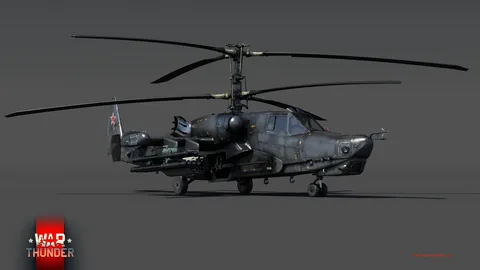Ка-50 (изделие «800», или, по кодификации НАТО: Hokum A) — советский/российский ударный вертолёт. Идея чисто ударного вертолёта заинтересовала советских инженеров после опыта боевого применения американских вертолётов во Вьетнаме и других конфликтах. В 1976 году в конструкторском бюро Ухтомского вертолётного завода имени Камова началась работа над новым вертолётом. При проектировании исследовались различные компоновки и конфигурации для будущего вертолёта, однако выбор был остановлен на традиционной для ОКБ «Камова» соосной схеме. Первый опытный образец машины был готов весной 1982 года, вертолёт получил обозначение Ка-50 (В-80), но из-за затянувшихся испытаний и доводок на вооружение Ка-50 был принят только в 1995 году. На заключительных этапах испытаний вертолёт стал главным героем приключенческого фильма «Чёрная акула» (1993), после которого за машиной и закрепилось это прозвище. Тестовые боевые вылеты Ка-50 состоялись в ходе Второй чеченской кампании, за время которой двумя машинами было сделано около 50 вылетов. Всего же до окончания производства в 2009 году было выпущено около 16 серийных и опытных вариантов Ка-50, вместо которых в дальнейшем стала строиться обновлённая версия — Ка-52 «Аллигатор». В игру Ка-50 прилетел в одноимённом обновлении 1.93 «Черная акула». «Чёрная акула», пожалуй, — один из лучших вертолётов в игре. Таким его делают в первую очередь универсальные ПТУР 9К121 «Вихрь», которые могут применятся не только против наземной техники, а также против авиации за счёт наличия радиовзрывателя. Помимо этого, соосная схема несущих винтов улучшила манёвренность и скорость вертолёта. Однако его недостатками являются отсутствие тепловизионного оборудования, что затрудняет поиск противника в ночное и дневное время суток, а также ограниченный сектор обстрела 30-мм пушки.
Ка-52
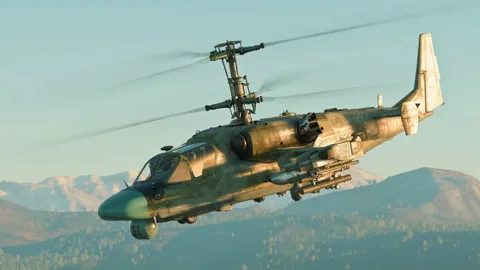Ка-52 «Аллигатор» («Изделие 800.06», или, по кодификации НАТО: Hokum B) — российский разведывательно-ударный вертолёт, представляет собой глубокую модернизацию вертолёта Ка-50 «Чёрная акула». Первый прототип вертолёта был переоборудован из Ка-50 в 1996 году, а серийное производство машин развернули в 2008-м. От «Чёрной акулы» вертолёт унаследовал все удачные конструкционные решения, такие как 30-мм автоматическую пушку, возможность подвески большого количества вооружения и соосную схему расположения несущих винтов, обеспечивающую хорошую управляемость, но также приобрёл и новые достоинства: двухместную кабину, более мощные двигатели, новые оптические и радиолокационные комплексы, обновлённую бортовую аппаратуру и другие улучшения. Всего было изготовлено более 170 экземпляров Ка-52, и они продолжают находиться в серийном производстве. В игру Ка-52 был добавлен в обновлении 1.97 «Ярость викингов». От своего прародителя в лице «Чёрной акулы» он отличается в первую очередь наличием тепловизионного оборудования, что позволяет эффективно уничтожать вражескую технику в ночное время суток. Также вместо четырёх пилонов здесь их шесть, поэтому вертолёт может взять больше подвесного вооружения.